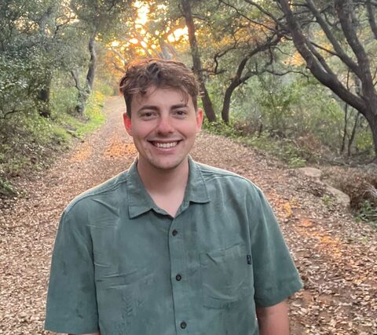

I am a PhD student in the WCSNG lab at UCSD, advised by Prof. Dinesh Bharadia. I study signal processing for radar and sensing applications. Broadly, I am interested in timing and channel estimation techniques, and in using these techniques to solve unconventional and challenging sensing problems. I also enjoy embedded hardware development, and implementing my projects in the cheapest and most scalable way possible.